Lighting director Matt Jones and programmer Alex Passmore used a grandMA3 system on the Mathematics Tour (+ – = ÷ ×).
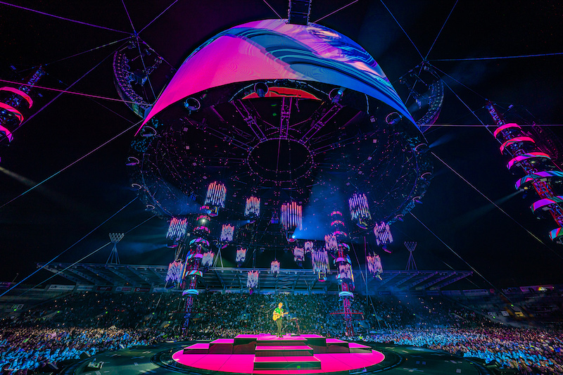
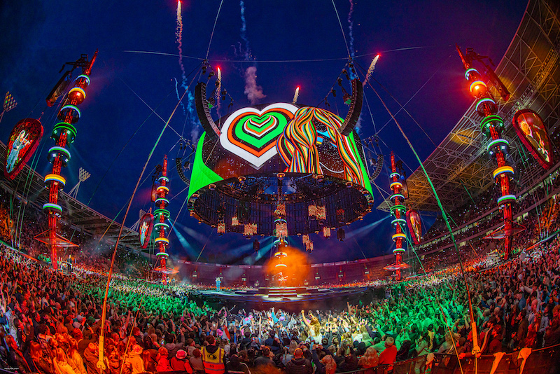
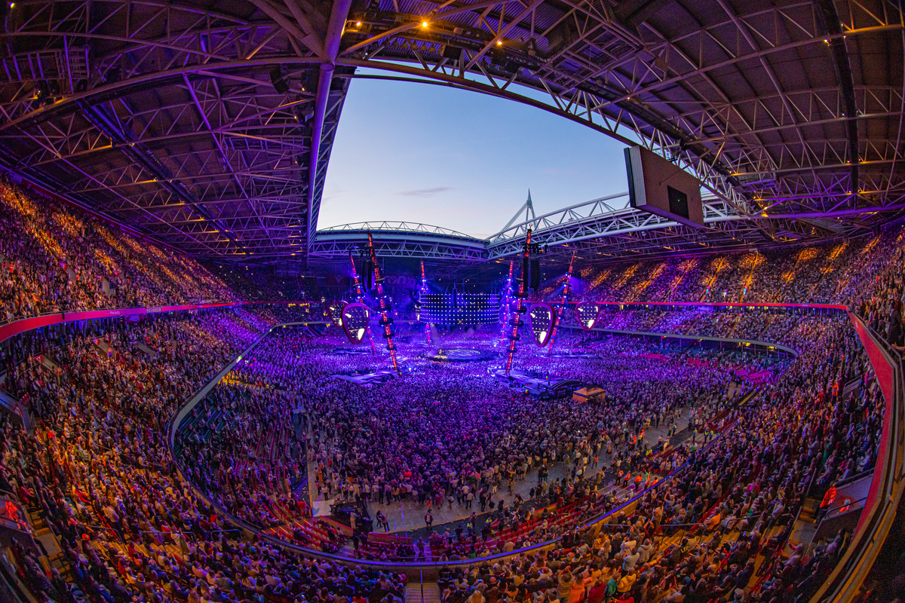
Known for one of the most complex lighting and pyrotechnic displays in touring history, TSO utilizes the grandMA3's advanced networking to sync massive truss movements and laser arrays with their signature rock-opera performance.

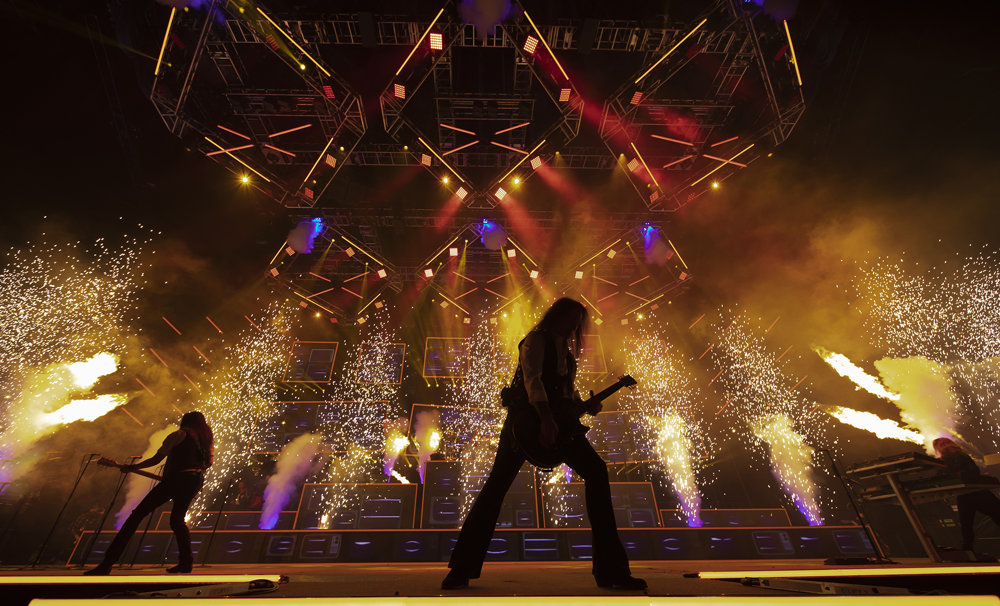
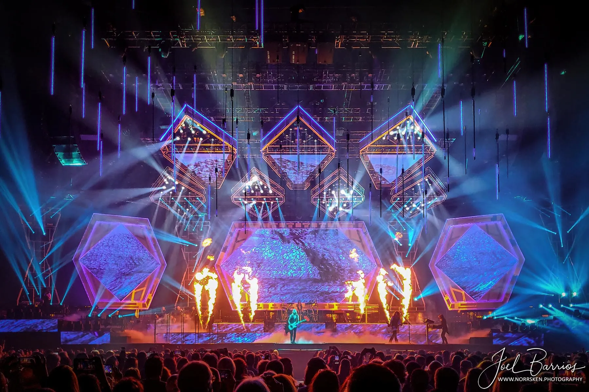
Kendrick Lamar, Samuel L. Jackson, and many more halftime performance was controlled using a grandMA3 lighting system.
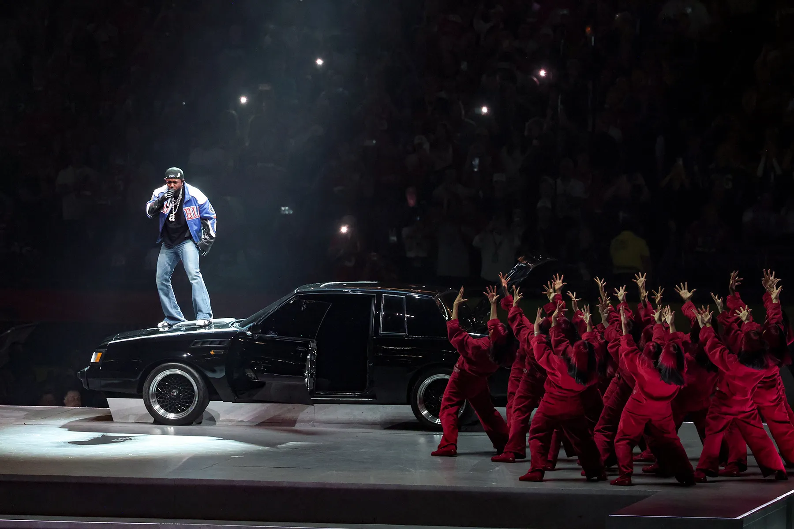
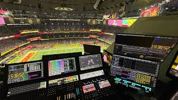
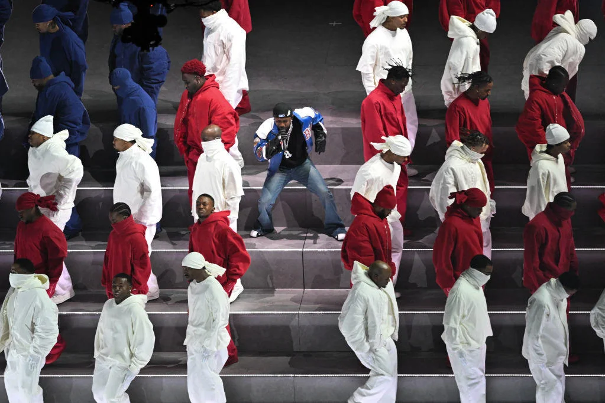
Lead Lighting Operator Scott Hayward with assisting operators, Will Strasser and Jackson Ebel. Pairing with Chauvet to bring the worship experience to levels never seen before.
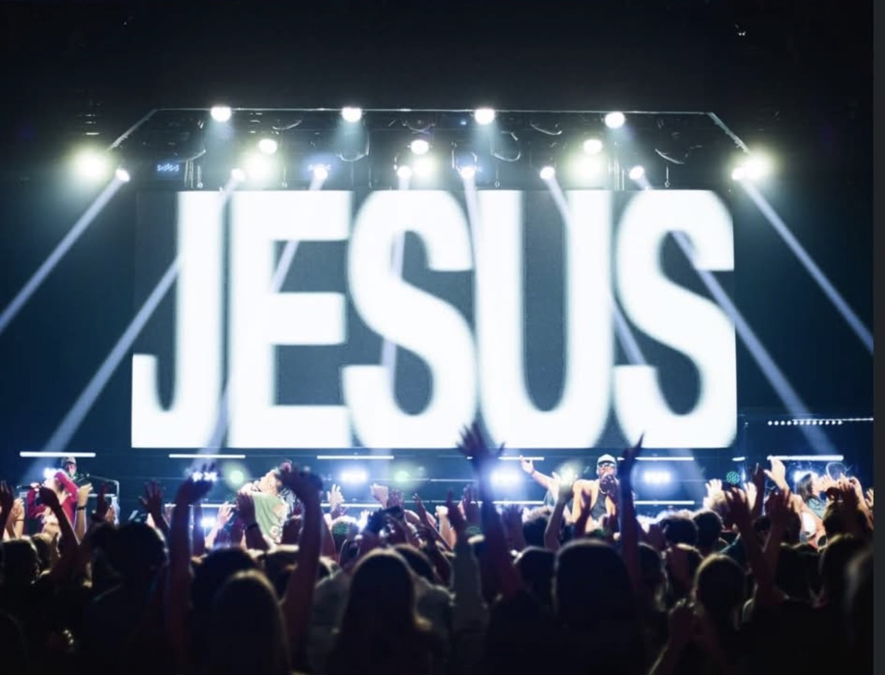
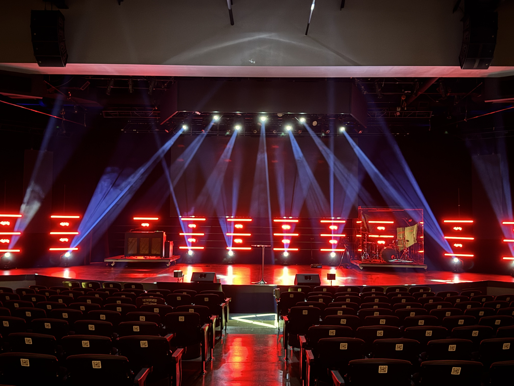
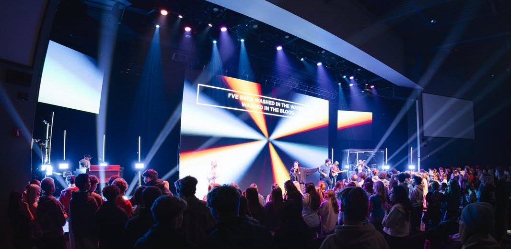
Used for performances during the 2024 Rock & Roll Hall of Fame induction events.
The music used in this video is royalty free and sourced from this YouTube video. Click here!